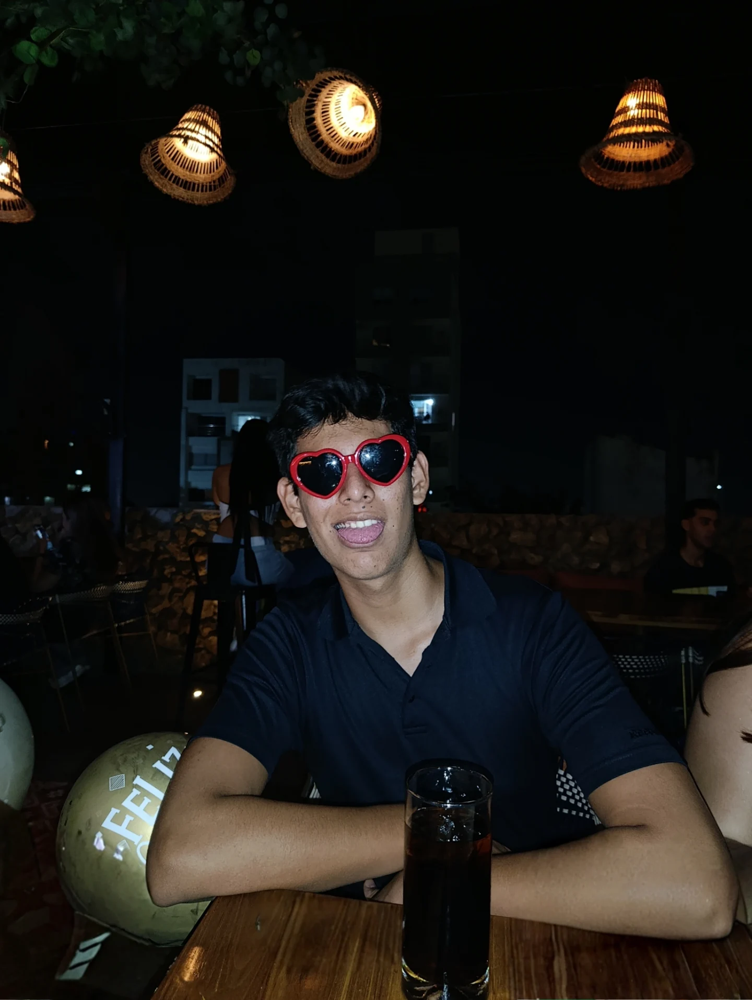

A pesar de todo lo que pase hay que ser resilientes y disfrutar cada momento
01 — Sobre mi
Mi nombre es Fernando Martínez, nací el 17 de septiembre de 2006. Soy estudiante de Ingeniería en Software y Negocios Digitales. Nací en San Salvador y actualmente vivo en Lourdes, Colón.
Siempre he sido una persona curiosa. Entre las cosas que me gusta hacer están escuchar música, jugar videojuegos y aprender sobre el mundo del software.

02 — Estudios
Escuela Superior de Economía y Negocios (ESEN)
Estoy aprendiendo a programar:9
Hilasal
Aprendi todo lo que se de html, css, Javacript e ingles
Universidad Dr. José Matías Delgado (ASAB)
ComplFejo Educativo Catolico San Jose